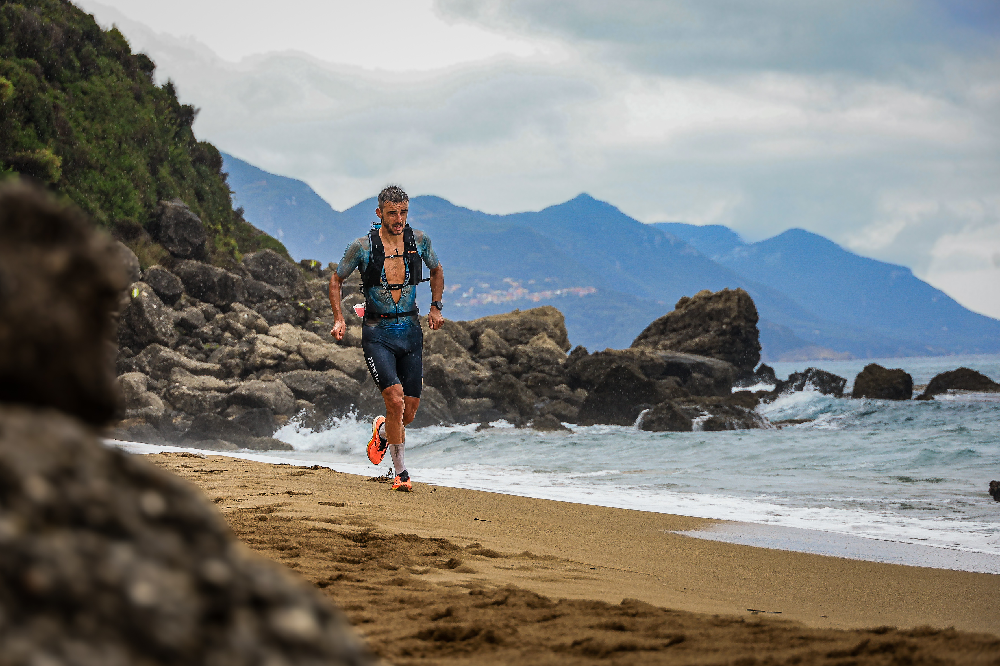
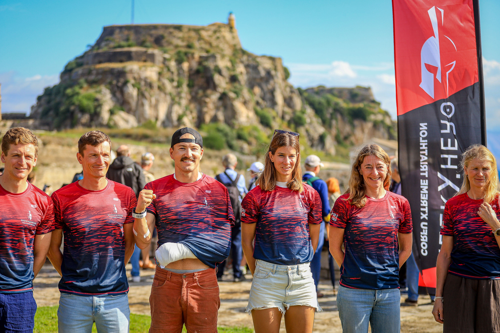

Greek Hero XTRI brought extreme triathlon to Corfu, Greece, on 10 October 2026. Image Media covered the event through Eduardo Castro and Michael Rosa, with photographs that move from the water to the island’s shoreline and the gathering around the race.
The organiser describes a course linking an Ionian Sea swim, cycling across Corfu and a run through beaches and olive groves towards Angelokastro. The terrain is central to the event’s identity, not simply a backdrop.
Endurance at the water’s edge
Eduardo Castro’s swim photograph captures orange floats and small lights against dark water, with warm reflections spreading across the surface. Arms break through the water while a figure on a board is visible farther away. The image records the swim’s atmosphere without assigning identities to the athletes.

Michael Rosa’s coastal image offers a different view of the effort: a competitor moves along sand between a rocky outcrop and breaking waves, with hills across the water. The photograph places the athlete inside the landscape, showing the uneven shore as part of the challenge rather than separating sport from its setting.

Image Media coverage
The group portrait brings the report back to the people gathered around Greek Hero. Matching red-and-blue event shirts and a race flag connect the faces to the occasion. Eduardo Castro and Michael Rosa’s coverage records both action and shared moments, with each selected photograph credited to its author.
Image Media coverage
Reporting: IM News Editorial Desk
Coverage photographers: Eduardo Castro and Michael Rosa / Image Media
Event date checked against the XTRI World Tour listing; course context checked against the organiser’s website. Photo credits matched to supplied filenames.